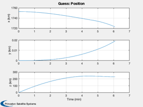
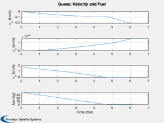
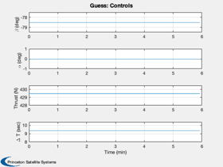
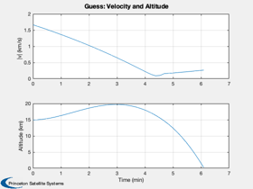
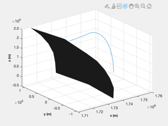
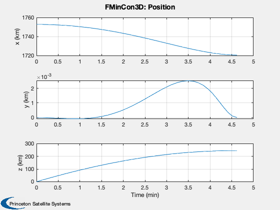
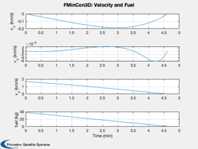
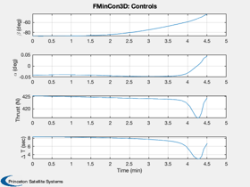
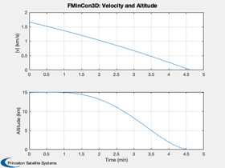
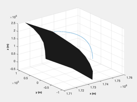

Test fmincon against an analytical solution for the linear tangent law
The test is for a lunar landing in 3D. The solution is in the moon fixed frame.
Requires fmincon from the MATLAB Optimization Toolbox.
Contents
%-------------------------------------------------------------------------- % Copyright (c) 2015 Princeton Satellite Systems, Inc. % All rights reserved. %-------------------------------------------------------------------------- % Since 2016.1 %-------------------------------------------------------------------------- if( ~HasOptimizationToolbox ) error('You need the MATLAB optimization toolbox to run this script.'); end
Parameters
muMoon = Constant('mu moon'); rMoon = Constant('equatorial radius moon'); h = 15; % Initial altitude r = rMoon + h; u = sqrt(muMoon/r); % Orbital velocity g = muMoon/rMoon^2; % Gravity at the lunar surface printFigures = 0; algorithm = 'interior-point'; d = RHSPlanet3D; d.nG = 3; a = d.nG*g; % Desired acceleration d.n = 40; % Number of steps d.m0 = 50; % Dry mass d.radius = rMoon; d.timeOpt = 1; % Find the thrust direction angles [beta, t, tMin] = BilinearTangentLaw( u, g, a, h, d.n ); fprintf(1,'Analytical minimum time %12.4s sec\n',tMin); dV = a*1000*tMin; mF = d.m0*(exp(dV/d.uE) - 1 ); d.thrustMax = a*1000*(d.m0+mF); d.s0 = [r;0;0;0;0;u;mF]; d.n = d.n-1; d.beta = -1.37*ones(1,d.n); d.alpha = zeros(1,d.n); d.thrust = d.thrustMax*ones(1,d.n); d.accel = ''; d.fuelW = 0; % Weight on fuel d.timeW = 1; d.a = 1000*a; % Convert to m/s^2 dT = t(2:end) - t(1:end-1); Simulate3DLanding( dT, d, 'Guess' );
Analytical minimum time 3.6576e+02 sec   
Now repeat with fmincon
% fmincon options if( verLessThan('matlab', 'R2014b') ) opts = optimset( 'Display','iter-detailed',... 'TolFun',0.6,... 'TolCon',1e-5,... 'MaxFunEvals',100000); else opts = optimset( 'Display','iter-detailed',... 'TolFun',0.6,... 'algorithm',algorithm,... 'TolCon',1e-5,... 'MaxFunEvals',100000); end costFun = @(x) LandingCost3D(x,d); constFun = @(x) LandingConst3D(x,d); alpha = zeros(d.n,1); thrust = d.thrustMax*ones(d.n,1); x0 = [d.beta';alpha;thrust;dT']; lB = [-(pi/2)*ones(d.n,1);-0.001*ones(d.n,1);zeros(2*d.n,1)]; uB = [ (pi/2)*ones(d.n,1); 0.001*ones(d.n,1);ceil(thrust);10*ones(length(dT),1)]; x = fmincon(costFun,x0,[],[],[],[],lB,uB,constFun,opts);
First-order Norm of
Iter F-count f(x) Feasibility optimality step
0 157 3.657635e+02 2.839e+00 1.013e-01
1 314 2.819860e+02 4.331e+00 1.657e+00 1.349e+01
2 471 2.726315e+02 2.939e-01 2.907e+00 1.791e+00
3 628 2.736251e+02 3.133e-02 3.804e+00 7.339e-01
4 785 2.738451e+02 2.057e-02 3.524e+00 1.393e+00
5 942 2.733956e+02 1.114e-01 3.102e+00 3.289e+00
6 1099 2.737378e+02 3.131e-02 3.083e+00 1.914e+00
7 1258 2.738019e+02 6.821e-02 3.370e+00 1.954e+00
8 1415 2.750206e+02 1.578e-02 3.223e+00 3.827e+00
9 1572 2.759747e+02 2.170e-02 3.415e+00 7.079e+00
10 1729 2.763784e+02 2.338e-02 3.161e+00 4.254e+00
11 1887 2.766375e+02 6.112e-04 2.700e+00 3.197e+00
12 2044 2.769759e+02 7.121e-03 2.492e+00 3.775e+00
13 2201 2.772009e+02 3.141e-03 2.525e+00 1.080e+00
14 2359 2.772142e+02 2.503e-03 2.535e+00 4.170e-01
15 2516 2.773333e+02 8.492e-04 2.524e+00 1.014e+00
16 2673 2.774072e+02 3.374e-05 2.549e+00 5.207e-01
17 2830 2.773927e+02 1.269e-05 2.539e+00 5.697e-02
18 2987 2.773921e+02 1.316e-04 2.512e+00 2.429e-01
19 3144 2.773829e+02 7.905e-05 2.492e+00 3.008e-01
20 3302 2.773881e+02 1.094e-06 2.510e+00 2.041e-01
21 3460 2.773568e+02 4.385e-05 2.585e+00 1.050e+00
22 3618 2.773093e+02 1.853e-05 2.696e+00 1.200e+00
23 3775 2.772814e+02 1.321e-04 2.697e+00 1.207e-01
24 3932 2.772397e+02 2.421e-04 2.699e+00 4.419e-01
25 4089 2.772419e+02 4.062e-04 2.690e+00 3.120e-01
26 4246 2.772427e+02 2.235e-04 2.702e+00 1.663e-01
27 4404 2.772344e+02 1.796e-06 2.733e+00 3.079e-01
28 4561 2.772354e+02 1.394e-04 2.729e+00 1.421e-01
29 4718 2.772374e+02 5.486e-05 2.733e+00 2.131e-01
30 4876 2.772440e+02 4.631e-07 2.739e+00 3.413e-01
First-order Norm of
Iter F-count f(x) Feasibility optimality step
31 5033 2.772475e+02 2.449e-04 2.747e+00 4.507e-01
32 5191 2.772394e+02 9.782e-07 2.765e+00 4.156e-01
33 5349 2.772084e+02 9.703e-06 2.820e+00 8.473e-01
34 5507 2.771959e+02 6.948e-07 2.854e+00 3.617e-01
35 5665 2.771982e+02 3.123e-07 2.850e+00 1.704e-01
36 5823 2.771960e+02 1.384e-07 2.851e+00 2.424e-01
37 5980 2.771987e+02 2.509e-05 2.851e+00 1.552e-01
38 6137 2.772041e+02 7.895e-05 2.859e+00 2.885e-01
39 6295 2.772132e+02 4.293e-06 2.882e+00 1.108e+00
40 6453 2.772223e+02 2.840e-07 2.893e+00 5.351e-01
41 6611 2.772391e+02 9.379e-07 2.896e+00 8.439e-01
42 6769 2.772502e+02 1.589e-08 2.894e+00 6.566e-01
43 6927 2.772511e+02 2.798e-08 2.894e+00 1.798e-01
44 7085 2.772540e+02 1.101e-08 2.898e+00 3.087e-01
45 7242 2.772579e+02 2.565e-05 2.899e+00 2.942e-01
46 7399 2.772594e+02 2.956e-05 2.896e+00 1.764e-01
47 7556 2.772615e+02 1.529e-05 2.892e+00 7.389e-02
48 7714 2.772709e+02 9.673e-09 2.878e+00 2.963e-01
49 7871 2.772764e+02 2.090e-05 2.859e+00 3.711e-01
50 8029 2.772850e+02 3.848e-08 2.839e+00 2.740e-01
51 8187 2.772954e+02 6.301e-07 2.823e+00 2.910e-01
52 8344 2.772968e+02 3.745e-06 2.820e+00 1.679e-01
53 8501 2.772956e+02 8.469e-06 2.821e+00 1.814e-01
54 8659 2.772921e+02 1.608e-08 2.825e+00 6.065e-02
55 8816 2.772939e+02 1.365e-05 2.825e+00 9.274e-02
56 8974 2.772948e+02 3.677e-07 2.827e+00 3.560e-01
57 9132 2.772890e+02 1.826e-08 2.825e+00 3.513e-01
58 9289 2.772836e+02 5.739e-06 2.823e+00 1.918e-01
59 9446 2.772760e+02 6.210e-05 2.833e+00 4.244e-01
60 9603 2.772710e+02 4.910e-05 2.847e+00 3.959e-01
First-order Norm of
Iter F-count f(x) Feasibility optimality step
61 9760 2.772682e+02 5.239e-05 2.865e+00 2.441e-01
62 9917 2.772686e+02 3.399e-05 2.873e+00 1.018e-01
63 10074 2.772656e+02 2.492e-05 2.875e+00 1.407e-01
64 10232 2.772615e+02 2.375e-07 2.879e+00 1.975e-01
65 10390 2.772598e+02 1.223e-07 2.891e+00 1.988e-01
66 10547 2.772597e+02 1.602e-05 2.921e+00 2.275e-01
67 10704 2.772620e+02 2.660e-05 2.977e+00 3.129e-01
68 10861 2.772640e+02 6.618e-06 3.025e+00 2.787e-01
69 11018 2.772631e+02 2.460e-06 3.037e+00 1.994e-01
70 11176 2.772620e+02 2.634e-08 3.030e+00 1.134e-01
71 11334 2.772603e+02 5.702e-08 2.236e+00 2.344e-01
72 11491 2.772597e+02 3.833e-06 3.443e+00 1.793e-01
73 11649 2.772606e+02 2.637e-08 7.143e+00 1.500e-01
74 11806 2.772601e+02 3.664e-06 4.824e+00 8.808e-02
75 11964 2.772594e+02 3.729e-10 6.104e+00 2.317e-01
76 12122 2.772591e+02 2.660e-09 4.789e+00 2.195e-01
77 12279 2.772574e+02 2.758e-06 5.144e+00 9.964e-02
78 12436 2.772575e+02 7.883e-07 4.907e+00 2.987e-02
79 12593 2.772573e+02 6.080e-06 1.812e+00 1.467e-01
80 12750 2.772571e+02 1.038e-05 2.019e+00 1.860e-01
81 12907 2.772576e+02 8.139e-06 2.677e+00 9.197e-02
82 13064 2.772574e+02 6.548e-08 2.123e+00 1.187e-02
83 13221 2.772559e+02 4.102e-06 3.274e+00 7.376e-02
84 13379 2.772536e+02 1.181e-08 2.578e+00 1.545e-01
85 13537 2.772521e+02 3.912e-09 3.150e+00 1.392e-01
86 13695 2.772511e+02 2.327e-09 3.894e+00 8.528e-02
87 13852 2.772496e+02 3.258e-06 3.188e+00 5.186e-02
88 14010 2.772491e+02 5.371e-07 2.434e+00 2.889e-02
89 14168 2.772474e+02 5.569e-09 1.479e+00 1.010e-01
90 14325 2.772472e+02 2.696e-07 1.685e+00 3.006e-02
First-order Norm of
Iter F-count f(x) Feasibility optimality step
91 14482 2.772472e+02 2.935e-06 3.166e+00 1.064e-01
92 14640 2.772482e+02 4.146e-09 3.395e+00 8.746e-02
93 14798 2.772495e+02 1.862e-09 2.820e+00 6.440e-02
94 14956 2.772477e+02 8.354e-10 2.315e+00 7.725e-02
95 15113 2.772456e+02 1.431e-06 2.121e+00 1.007e-01
96 15270 2.772437e+02 3.381e-07 3.065e+00 2.041e-01
97 15428 2.772466e+02 5.736e-09 2.287e+00 1.479e-01
98 15585 2.772480e+02 2.309e-06 1.903e+00 8.748e-02
99 15743 2.772493e+02 3.579e-09 2.215e+00 1.587e-01
100 15901 2.772498e+02 1.805e-10 2.262e+00 8.678e-02
101 16059 2.772503e+02 1.502e-09 1.357e+00 5.458e-02
102 16216 2.772499e+02 3.380e-07 1.458e+00 3.011e-02
103 16374 2.772495e+02 5.427e-10 1.283e+00 8.191e-02
104 16531 2.772495e+02 2.871e-07 6.368e-01 8.651e-02
105 16688 2.772498e+02 6.699e-07 5.501e-01 1.100e-01
Optimization completed: The relative first-order optimality measure, 5.500829e-01,
is less than options.OptimalityTolerance = 6.000000e-01, and the relative maximum constraint
violation, 2.359956e-07, is less than options.ConstraintTolerance = 1.000000e-05.
 Simulate the landing
d.beta = x(1: d.n)'; d.alpha = x(d.n+1: 2*d.n)'; d.thrust = x(2*d.n+1:3*d.n)'; dT = x(3*d.n+1:4*d.n)'; [cIn, cEq, s] = LandingConst3D( x, d ); DispWithTitle(cEq,'Final equality constraints'); Simulate3DLanding( dT, d, 'FMinCon3D' ); if( printFigures ) for k = 1:10 PrintFig(0,2,k,sprintf('fmincon3D_%d',k)); end end %--------------------------------------
Final equality constraints -6.699e-07 3.1932e-09 3.2326e-09 1.9833e-10 -3.2781e-08    